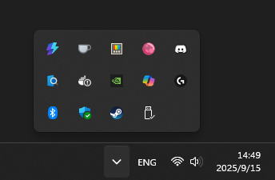
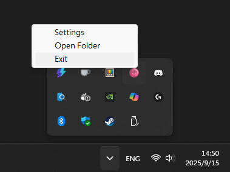

HotkeyTray - 托盤監聽截圖工具
HotkeyTray - 托盤監聽截圖工具試工具
為什麼會有這個工具
在多螢幕環境下工作時，截圖常常是一件麻煩事。
Windows 內建的截圖工具要不就是需要手動框選範圍，要不就是整個螢幕，
如果我只想要「左螢幕一鍵截圖」或「右螢幕一鍵截圖」，就顯得很笨重。
於是我動手寫了一個小工具 —— HotkeyTray。
它是一個常駐在系統托盤的 Python 程式，只要設定好快捷鍵，就能隨時一鍵截圖並自動儲存。

工具簡介
- 名稱：HotkeyTray
- 功能特色：
- 系統托盤常駐，不佔畫面
- 設定快捷鍵截取左螢幕、右螢幕
- 設定檔可自訂快捷鍵、儲存路徑
- 適用情境：
- 遠端開會快速截圖
- 文件製作
- 一般多螢幕日常使用

技術堆疊
- Python
- pystray：系統托盤功能
- keyboard：快捷鍵偵測
- Pillow：影像處理
- dotenv + JSON：設定管理
安裝與使用
安裝
- 可以直接下載 EXE 檔執行
- 或者用 Python 自行執行：
git clone https://github.com/henry43171/HotkeyTray.git
cd HotkeyTray
python src
使用步驟
- 啟動程式後，系統托盤會出現 HotkeyTray 圖示
- 預設快捷鍵：
Alt+1= 左螢幕截圖Alt+2= 右螢幕截圖
- 截圖會自動存到
screenshots/資料夾
開發過程的小插曲
這原本只是個簡單的小工具，但過程中還是踩了不少坑：
- 一開始有兩份
load_config，搞到自己亂掉 - 一度遇到「修改設定後不會馬上套用」的問題
- 才發現，就算小專案也會遇到維護性挑戰
這些問題讓我開始理解「程式碼乾淨」與「可維護性」的重要性。
未來計畫
- 更直覺的設定 UI
- 支援更多快捷鍵動作（例如複製到剪貼簿、不存檔）
結語
如果你也覺得多螢幕截圖麻煩，或許這個小工具能幫到你。
程式碼已經放在 GitHub，歡迎下載試試。
GitHub 連結：https://github.com/henry43171/HotkeyTray